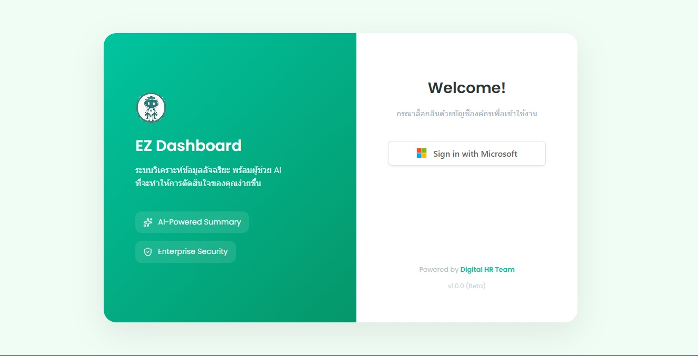
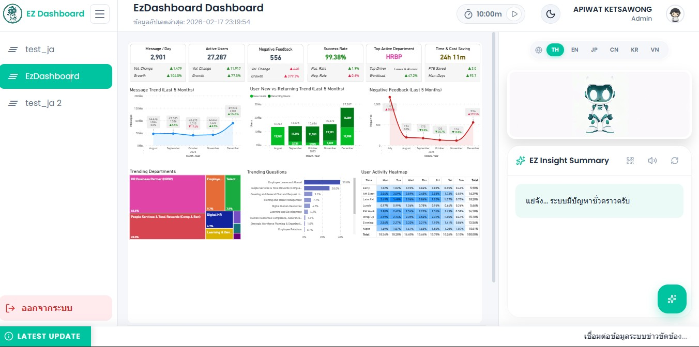

ทีม AI ต้องการเครื่องมือช่วยติดตามการใช้งาน AI ของพนักงาน แต่ยังไม่มีระบบกลางที่รวบรวมและแสดงข้อมูลให้ดูง่ายในที่เดียว
พัฒนาเว็บแดชบอร์ดที่ให้ทีมพัฒนา AI ดูข้อมูลการใช้งาน AI ผ่านกราฟแบบโต้ตอบ คลิกเพื่อสอบถาม AI เพิ่มเติมได้ในหน้าเดียวกัน พร้อมออกแบบให้ AI ตอบกลับได้ทั้งข้อความสรุปและเสียงพูด (Text-to-Speech) เพื่อให้ใช้งานได้สะดวกหลายรูปแบบ
ระบบแบ่งเป็นชั้นที่ทำงานร่วมกัน: ชั้นหน้าบ้าน ใช้ React แสดงกราฟและรับการโต้ตอบจากผู้ใช้ ชั้นหลังบ้าน ใช้ Node.js เป็นตัวกลางรับคำขอ ส่งต่อไปยังระบบ AI เพื่อประมวลผลภาษาและแปลงคำตอบเป็นทั้งข้อความและเสียงพูด ก่อนส่งกลับมาแสดงที่หน้าเว็บ กราฟที่ใช้แสดงผลสร้างจาก Power BI แล้วฝังเข้าเว็บผ่าน Azure ซึ่ง Azure ยังทำหน้าที่จำกัดการเข้าใช้งานเฉพาะอีเมลบริษัท (ล็อกอิน/สิทธิ์การเข้าถึง) ส่วนข้อมูลการใช้งานเว็บ (usage log) ถูกเก็บแยกไว้ใน BigQuery
ทีม AI ดูข้อมูลการใช้งาน AI ของพนักงานได้สะดวกขึ้นผ่านกราฟแบบโต้ตอบในหน้าเดียว แทนที่จะต้องรวบรวมข้อมูลจากหลายแหล่งด้วยมือ